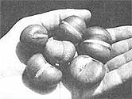
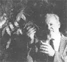

SEASONS OF THE GARDEN
Hot news from the horticultural front.
THE ONGOING SEARCH FOR AN anti-AIDS drug leads scientists down some bizarre trails. One current path of research involves an Australian rain forest tree, the Moreton Bay chestnut. Laboratory tests at the National Cancer Institute show that castanospermine, a chemical extracted from the tree's seeds, prevents the AIDS virus from killing healthy cells.
At the same time, Dr. James A. Duke, a botanist with the USDA's Agricultural Research Service, is trying to raise the exotic chestnut (it's actually a legume) as an ornamental houseplant. "The plant looks somewhat like the popular Benjamin fig except the leaves are slightly larger and glossier," Duke says. It does well under fluorescent lights, needs little maintenance and will grow about six feet high in a container. (It can tower over 100 feet in its native environment.)
Assuming that both the NCI anti-AIDS testing and Dr. Duke's container-training efforts continue to go well, will home gardeners start raising AIDS remedies on their windowsills? Will there be a rush for Moreton Bay seeds, similar to the peach pit collecting craze back when Laetrile was touted as a cancer cure? Not likely, according to Duke. "The seed should not be chewed because it contains toxins in its natural state. The castanospermine is extracted by water and purified with chromatography."
Oh, well. Still, you have to admit that having the source of a possible anti-AIDS drug posing graciously in your home would be a great conversation piece!
Research Briefs
Try tea and see. Don't throw out used tea bags-tear them open and spread the contents around garden plants! Tea leaves contain triacontanol and, according to Indian chemists, very tiny amounts of this potent plant-growth stimulator in the soil can produce significant increases in crop yields.
Wile E. Melon. The midnight munchers in your melon patch might not be raccoons. Commercial melon growers as far east as Mississippi have lost several thousand dollars' worth of their melons to coyotes!
Young seed potatoes . If you're going to save some potatoes for next year's seed tubers, harvest those spuds early-even before the plants die. "Young" seed potatoes tend to produce higher yields of larger, better quality tubers. (Exception: If your growing season is quite short, pick your seed spuds from more mature tubers. Young seed potatoes need a longer growing season than old ones.)
Great glistening whiteflies! Low-toxic horticultural oils (including "dormant oils") are often used to control insect and mite pests on outdoor crops. Recent research by the Agency for International Development indicates they work well indoors, as well. Concentrations of 1-207o Sunspray 6E (made by the Sun Oil Company) controlled greenhouse infestations of whiteflies, spider mites and leaf miners.
Saltwater tomatoes. Israeli scientists have produced significantly better-tasting tomatoes by irrigating the plants with diluted seawater. However, since season-long saline irrigation also reduces yields, the researchers apply the salt treatment only after many of the fruits have begun to form. A 3 dS/m solution works best (consult your local extension agent to learn how to concoct it).
Strung-out deer. Kentucky wildlife deer specialist John Phillips reports that a double fencing of plain string will keep deer out of relatively small areas. A three-strand, yard high outer fence is set about one yard away from a one-strand, yard-high inner one.
Gleanings
Landscaping for Wildlife ($8.45 postpaid from Minnesota Documents Division, 117 University Ave., St. Paul, MN 55155) is far and away the finest book we've seen on the subject.... If your oak trees look sick, send for the free 70-page, color-photo book Oak Pests: A Guide to Major Insects, Diseases, Air Pollution and Chemical Injury (Southern Forest Experiment Station, T-10210 U.S. Postal Services Building, 701 Loyola Ave., New Orleans, LA 70113).... Contact John Rieger (3808 Rosecrans St., #373, San Diego, CA 92110) for information about the newly formed Society for Ecological Restoration and Management and its publications.... The proceedings from the Cornell Organic and Low-Spray Fruit Production Conference ($10 postpaid from NOFA-NY, P.O. Box 454, Ithaca, NY 14851) provide the best information available about current state-of-the-art ecological approaches to producing apples.... Tree Tender wrap (Davlyn Manufacturing Co., Inc., Box 626, Chester Springs, PA 19425) is a stretchable, stainless steel mesh that will definitely protect your fruit tree trunks from wintertime rodent nibbling.... Culinary Botany: The Essential Handbook ($12 postpaid from Culinary Botany Northwest, Box 5403, Kent, WA 98064) covers history, uses, culture and more of over 100 of the "new," unusual vegetables and fruits.
Greg and Pat Williams raise most of their food on a small farm and publish HortIdeas, a fine newsletter on gardening research and products ($15 a year from G. & P. Williams, Rt. 1, Box 302, Gravel Switch, KY 40328).
|
 The seeds from a Moreton Bay chestnut. Right, Dr. Duke holds a container-raised plant. |
 |
|